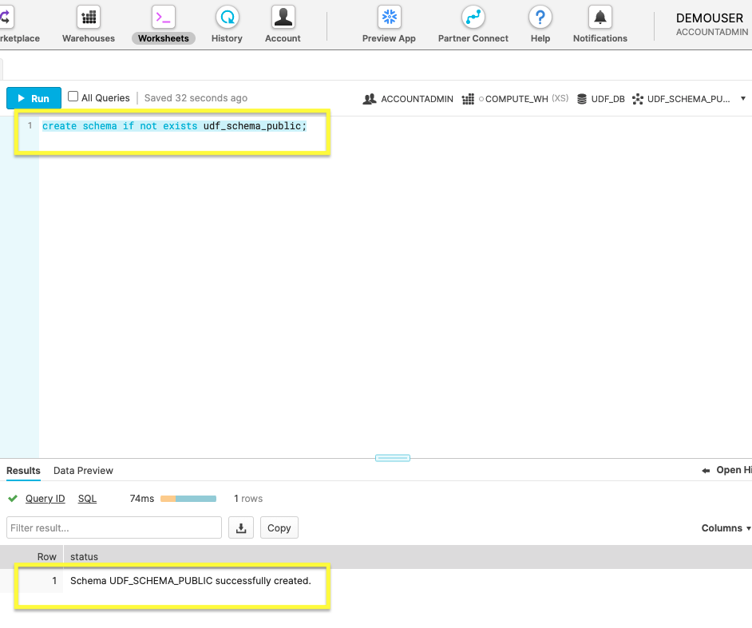
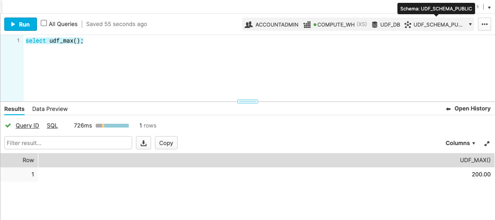
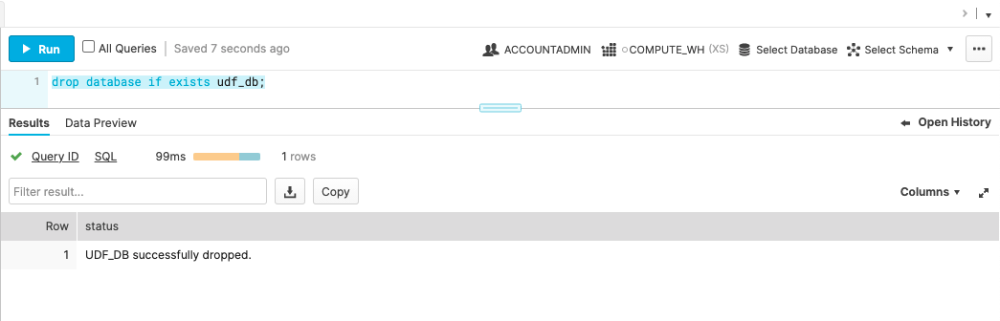

UDF(사용자 정의 함수)로 시스템을 확장하면, Snowflake에서 제공하는 내장 시스템 정의 함수를 통해 제공되지 않는 작업을 수행할 수 있습니다.
Snowflake는 현재 UDF 작성을 위해 다음 언어를 지원합니다.
- SQL: SQL UDF는 임의 SQL 식을 평가하며 스칼라 또는 테이블 형식 결과를 반환합니다.
- JavaScript: JavaScript UDF를 통해 JavaScript 프로그래밍 언어를 사용하여 데이터를 조작하고 스칼라 또는 테이블 형식 결과를 반환할 수 있습니다.
- Java: Java UDF를 통해 Java 프로그래밍 언어를 사용하여 데이터를 조작하고 스칼라 결과를 반환할 수 있습니다.
이 가이드는 Snowflake 설정 과정을 안내하며 여러분이 다음에 익숙해질 수 있도록 합니다
- SQL UDF(사용자 정의 함수) 생성 및 실행
- SQL UDTF(사용자 정의 테이블 함수) 생성 및 실행.
사전 필요 조건 및 지식
Snowflake 사용자 인터페이스에 익숙하지 않다면 아래 동영상을 시청하십시오.
- 짧은 Snowflake 소개 동영상
학습할 내용
- Snowflake 계정 및 사용자 권한
- 데이터베이스 오브젝트 생성
- 사용자 정의 스칼라 함수 쿼리
- 사용자 정의 테이블 함수 쿼리
- 데이터베이스 오브젝트 삭제
필요한 것
- Snowflake 평가판 계정
구축할 것
- 오브젝트 쿼리를 위한 데이터베이스 오브젝트 및 사용자 정의 함수.
우선 여러분의 Snowflake 계정을 생성하고 사용자 권한을 관리하는 방법을 다루겠습니다.
Snowflake 계정 생성
Snowflake는 무료로 Snowflake 서비스를 이용해 볼 수 있도록 평가판 계정을 제공합니다. 프롬프트에 따라 이메일로 계정을 활성화합니다.
Snowflake 계정이 이미 있다면 이를 사용할 수 있습니다. 데이터베이스 생성 권한을 가진 역할만 있으면 됩니다.
Snowflake의 웹 콘솔 액세스
https://<your-account-name>.snowflakecomputing.com/console/login
브라우저에서 웹 인터페이스에 로그인합니다. URL은 여러분의 계정 이름과 잠재적으로 지역을 포함합니다.
역할 변경
Positive : Snowflake 계정이 이미 있다면 데이터베이스 생성 권한을 가진 역할을 사용할 수 있습니다.

기본값인 SYSADMIN에서 ACCOUNTADMIN으로 계정 역할을 전환합니다. 필수는 아니지만, 이 랩의 스크린샷과 웹 UI가 일치하게 만들어 줍니다.
새로운 계정을 생성하고 역할을 구성했으니 다음 섹션에서 데이터베이스 오브젝트 생성을 시작할 준비가 되었습니다.
Snowflake 계정에 쉽게 접근할 수 있으니 데이터베이스 오브젝트를 생성할 시간입니다.
Snowflake 웹 콘솔 내에서 Worksheets로 이동한 다음 새로운 워크시트를 사용하여 다음 명령을 실행합니다.
1. 새로운 데이터베이스 생성
create or replace database udf_db;
위 명령으로 udf_db라는 새로운 데이터베이스를 구축합니다.

Positive : Results는 Database UDF_DB successfully created라는 상태 메시지를 표시해야 합니다.
2. 새로운 스키마 생성
create schema if not exists udf_schema_public;
위 명령을 사용하여 udf_schema_public이라는 스키마를 생성합니다.

Positive : Results는 Schema UDF_SCHEMA_PUBLIC successfully created라는 상태 메시지를 표시해야 합니다.
3. 새로운 테이블에 샘플 데이터 복사
create or replace table udf_db.udf_schema_public.sales
as
(select * from snowflake_sample_data.tpcds_sf10tcl.store_sales sample block (1));
‘sales'라는 테이블을 생성하고 이 명령으로 매출 데이터를 가져옵니다. 샘플 데이터를 가져오는 데 이전 단계에서 보다 더 긴 실행 시간이 소요될 것입니다.

Positive : Results는 Table SALES successfully created라는 상태 메시지를 표시해야 합니다.
필요한 데이터베이스 오브젝트가 생성되었으니 다음 섹션에서 UDF로 작업하는 메인 수업으로 이동할 시간입니다.
샘플 매출 데이터가 포함된 데이터베이스가 있으니 스칼라 UDF 생성을 시도할 준비가 거의 끝났습니다. 시작하기 전에 우선 UDF 명명 규칙에 대해 더 자세히 이해해 보겠습니다.
Negative : 함수 이름이 데이터베이스와 스키마(예: udf_db.udf_schema_public.udf_name)를 지정하지 않는다면 기본값으로 활성 세션이 됩니다. UDF는 데이터베이스 오브젝트이기에 자체적인 명명 규칙을 따르는 것이 더 낫습니다. 빠른 연습을 위해 활성 세션에 의존하겠습니다.
1. UDF 생성
create function udf_max()
returns NUMBER(7,2)
as
$$
select max(SS_LIST_PRICE) from udf_db.udf_schema_public.sales
$$
;
SQL 함수 max는 SS_LIST_PRICE 열에서 가장 높은 값을 반환합니다.

이미지는 udf_max 함수의 성공적인 생성을 보여 줍니다.
2. UDF 호출
select udf_max();
SQL 명령 select로 새로운 UDF를 호출합니다.

위 이미지는 반환된 Results입니다.
이제 UDF 생성의 기본 사항을 연습했으니 새로운 테이블을 반환하는 UDF를 생성하여 다음 섹션에서 한 단계 더 어려운 작업을 시작하겠습니다.
성공적인 스칼라 UDF를 생성한 후 UDTF(사용자 정의 테이블 함수)로 테이블을 반환하는 함수를 만들어 보겠습니다.
1. UDTF 생성
create or replace function
udf_db.udf_schema_public.get_market_basket(input_item_sk number(38))
returns table (input_item NUMBER(38,0), basket_item_sk NUMBER(38,0),
num_baskets NUMBER(38,0))
as
'select input_item_sk, ss_item_sk basket_Item, count(distinct
ss_ticket_number) baskets
from udf_db.udf_schema_public.sales
where ss_ticket_number in (select ss_ticket_number from udf_db.udf_schema_public.sales where ss_item_sk = input_item_sk)
group by ss_item_sk
order by 3 desc, 2';
위 코드 조각은 시장바구니 분석을 포함한 테이블을 반환하는 함수를 생성합니다.

2. UDTF 실행
select * from table(udf_db.udf_schema_public.get_market_basket(6139));
스칼라 UDF와 같이 이는 여러분의 함수를 실행합니다.

반환된 것은 샘플 매출 데이터를 기반으로 한 시장바구니 분석 테이블입니다.
여러분은 UDTF를 만드는 것을 연습했으며 UDF에 익숙해졌습니다. 마지막 섹션에서는 필요 없는 데이터베이스 오브젝트를 삭제하겠습니다.
많은 내용을 다뤘습니다! 마무리하기 전에 이 가이드에서 생성했던 연습 데이터베이스를 삭제하십시오. 이는 생성했던 데이터베이스와 모든 테이블 및 함수를 삭제합니다.
1. 데이터베이스 삭제
데이터베이스 삭제: udf_db.
drop database if exists udf_db;

UDF_DB successfully dropped의 Results를 확인하여 데이터베이스가 완전히 삭제되었는지 확인합니다.
스칼라와 테이블 함수를 모두 연습했기에 이제 SQL UDF를 잘 다룰 수 있을 것입니다. 데이터베이스 오브젝트를 끝냈으니 앞으로의 단계를 살펴볼 시간입니다.
공유 가능하고 안전한 사용자 정의 함수의 잠재력을 고려하십시오. 안전한 UDF의 위력에 대한 이 게시물에서 시장바구니 분석 테이블과 같은 사용자 정의 함수를 공유하는 방법을 배울 수 있습니다.
다룬 내용
- Snowflake 계정 등록
- 역할 권한 구성
- 데이터베이스 및 기타 오브젝트 생성
- UDTF로 데이터를 분석하기 위한 테이블 생성
- 사용자 지정 UDF 쿼리
- 모든 오브젝트를 정리하기 위해 데이터베이스 삭제
관련 리소스
UDF에 대한 더 많은 정보: